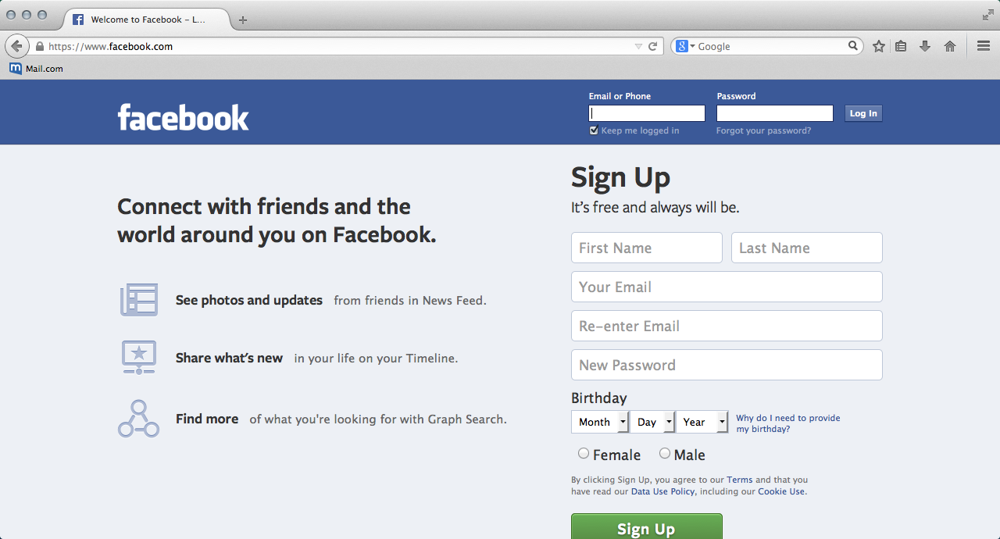
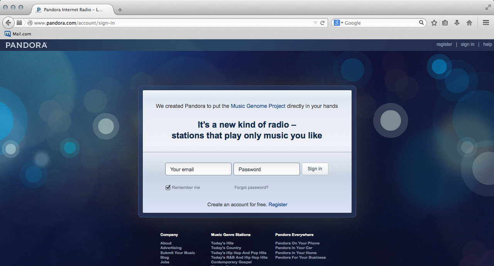
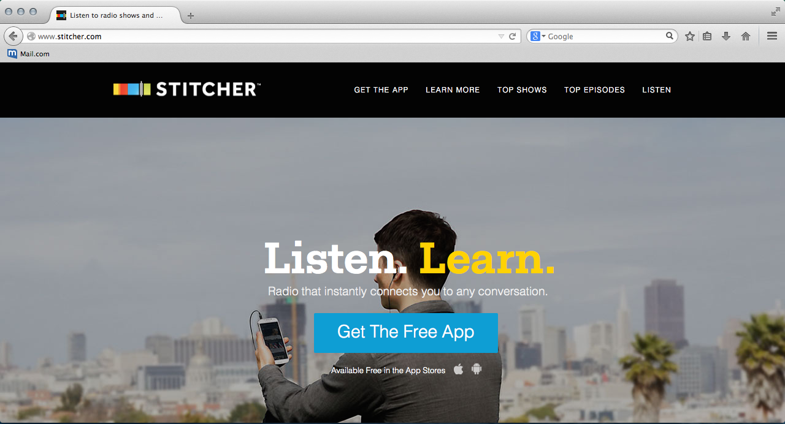

This is one of my favorite sites because it's my source of entertainment, news and allows me to network with my hobby community and friends from all over the world. My business also uses Facebook as one channel to market and sell so I'm naturally on it a lot. The moment I log in, my eye jumps to the center of the page, which just so happens to be where all the posts are. The site is simple but cluttered and very boxy. It's also really functional and my friends guide the content. Since the content can vary, it makes sense to keep everything in a simpler boxy format. It's pretty easy to navigate from the homepage as all the important links are grouped to a sidebar on the left. Scroll down until you see the link you want. Fortunately, this side bar stays put even when you're on your personal page. It's not as fluid when you have a business page. In order to find that side bar you have to go back to the home page. Depending on the amount of friends or groups you have, it can take a while to see everything that's been posted. You would just keep scrolling down until you get to a post you've seen. Since the site is user driven, I've experienced everything from sad to happy, bored to productive. Some Facebook groups are set up as classifieds and I've purchased items from there. In order to post on the classifieds, you must have a personal page. A quick glance into the seller's page can tell you if the seller is a scam or reliable.
This is my go to site for music when I'm studying or working because it doesn't require too much thinking. When I log in, the play button is up top and my preselected stations are to the left. The site is simple and dark but I don't really look at the site too much to care. The content is music and I usually have the site open while I tackle other computer tasks It's a practical site without too many bells or whistles. To be honest, I haven't found the need to go to any other page of his website and everything I do is on the homepage. This is also not a browsing kind of website for me. After a while, I do get bored of music but it can be a great motivator when I find the right station. This site does offer memberships so that you can skip advertisements. I treat the music as ambient noise so the advertisements don't bother me.
When Pandora's algorithms can't seem to pick the right music for me, I just switch over to Stitcher where I listen to my favorite podcasts such as NPR: TED Radio Hour and Freakonomics. The homepage is primarily set to get you to download their app but once I click the listen button on the top right, I get to the good stuff. The site is simple, boxy and serious. There are suggestions in the center, which I do click on from time to time but I usually go straight to my stations. The purpose of the site is to allow easy access to over 20,000 radio shows and podcasts. With that many possibilities, the simplicity of the site makes it less overwhelming to find what you like. Navigating is super easy since there are really only 3 places to go, the front page, browse shows and my stations. Since I can switch podcasts episodes whenever I want, I never get bored and always manage to find something worth listening to.
